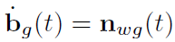
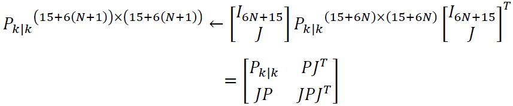
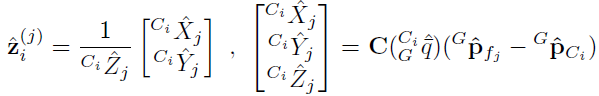

MSCKF for VINS Study
This page will show the study note of MSCKF (Multi-State Constraint Kalman Filter) for Vision-aided Inertial Navigation. It's also famous as another branch of visual-inertial solution. The MSCKF is based on ESEKF, please review Error State Extend Kalman Filter Study - wave 3 development - Docupedia (bosch.com) if necessary.
Overall Introduction
Let's first review the disadvantages of the EKF to SLAM which estimate both the robot's pose and locations of landmarks in the environment. The state space for 2D plane is,
It's a (3+2n) dimensional Gaussian estimation problem. The "Extended Kalman Filter Algorithm" is as below,
Its belief is represented by,
Hence the high volume of data also poses a significant challenge for estimation algorithm design. When real-time localization performance is required, one is faced with a fundamental trade-off between the computational complexity of an algorithm and the resulting estimation accuracy.
The MSCKF is able to optimally utilize the localization information provided by multiple measurements of visual features. Its measurement model that expresses these geometric constraints without including the 3D feature position in the filter state vector, resulting in computational complexity only linear in the number of features. It is capable of high-precision pose estimation in large-scale real-world environments.
MSCKF Algorithm Loop:
Update nominal state with IMU motion model as prediction
Propagate error state uncertainty
When it triggers measurement update (visual features are no longer visible or remove camera pose due to sliding window limits, will discuss later), otherwise go back to step 1
Compute the Kalman Gain
Compute the error state based on visual geometric constraints (each image will have a pose based on the predicted nominal state)
Correct the nominal state with error state
Correct the error state covariance/uncertainty
Reset the error state and go back to step 1
State System Model
The error in the estimate  (nominal state, no noise + static bias) of a quantity
(nominal state, no noise + static bias) of a quantity  (true state with noise and dynamic bias) is defined as
(true state with noise and dynamic bias) is defined as  .
.
Nominal State
Assuming that N camera poses are included in the EKF state vector at time-step k, this nominal vector has the following form,
where "I" means IMU-affixed frame, "G" is the global frame (ECEF), "C" is the camera frame.  is the unit quaternion describing the estimated rotation from frame "G" to frame "C i" (
is the unit quaternion describing the estimated rotation from frame "G" to frame "C i" ( camera),
camera),  is the estimated position of the
camera.
is the estimated position of the
camera.
Error State
The EKF error state vector is defined accordingly,
where,
the orientation error is described by the error quaternion  and we use
and we use  (3-DoF) describe the attitude errors is a minimal representation.
(3-DoF) describe the attitude errors is a minimal representation.
And the  and
and  are 3x1 vectors that describe the error of biases affecting the gyroscope and accelerometer measurements, respectively.
are 3x1 vectors that describe the error of biases affecting the gyroscope and accelerometer measurements, respectively.  and
and  are the error of velocity and IMU position.
are the error of velocity and IMU position.
IMU Motion Equation and Covariance Propagation
Next, let's see the filter propagation equations are derived by discretization of the continuous-time IMU system model. Then we've the nominal state update/prediction function.
Continuous-time system modeling
True State
The time evolution of the IMU state is described by, the equation below is the derivatives of true state against time.

where  is the acceleration under the global frame and
is the acceleration under the global frame and  is the angle velocity under IMU frame. The rest is the same as ESEKF definition.
is the angle velocity under IMU frame. The rest is the same as ESEKF definition.
It is important to note that the IMU measurements incorporate the effects of the planet’s rotation  (It considers the speed of the earth's rotation, and a bunch of people on the Internet say that there is no consideration in the code). Moreover, The Accelerometer Measurements Include The
(It considers the speed of the earth's rotation, and a bunch of people on the Internet say that there is no consideration in the code). Moreover, The Accelerometer Measurements Include The
gravitational acceleration  expressed in the local frame. Hence the IMU measurement can be described as,
expressed in the local frame. Hence the IMU measurement can be described as,
where C(.) denotes a rotational matrix,  and
and  are zero-mean, white Gaussian noise processes modeling the measurement noise. Please be noted the Stereo-MSCKF has ignore the effects of the planet’s rotation. So the IMU measurement could be simplified as,
are zero-mean, white Gaussian noise processes modeling the measurement noise. Please be noted the Stereo-MSCKF has ignore the effects of the planet’s rotation. So the IMU measurement could be simplified as,
Nominal State
Now let's check the continuous-time system model for nominal state with symbol ^. And the nominal state will not consider any noise. This is also where our IMU motion equation (nominal state prediction) comes from.
where,
 , the linear acceleration only considers the static bias without random noise.
, the linear acceleration only considers the static bias without random noise.
 , the angle velocity only consider the earth's rotation and static bias without random noise.
, the angle velocity only consider the earth's rotation and static bias without random noise.
tips
Coriolis force and centrifugal force have been removed from IMU measurement in the equation about  .
.
Error State under continuous time
The linearized continuous time model for the IMU error-state is, it describes the error state derivatives against time (please ignore the math deduction). From the equation below, we can easily tell the derivates of each error state same as nominal state does. Here is just a compact form and put everything into one equation.
where  is the system noise. The covariance matrix of
,
is the system noise. The covariance matrix of
,  depends on the IMU noise characteristics and is computed off-line during sensor calibration.
depends on the IMU noise characteristics and is computed off-line during sensor calibration.
Put it together.
Error State Covariance Propagation under Discrete-time
The IMU samples the signals  and
and  with a period T. And these measurements are used for state propagation in the EKF. Based on the above
error state derivatives equation under c
ontinuous-time, we can write the equation between two nearby error state under discrete-time,
with a period T. And these measurements are used for state propagation in the EKF. Based on the above
error state derivatives equation under c
ontinuous-time, we can write the equation between two nearby error state under discrete-time,  is IMU measurement interval. The equation below is the IMU error state under discrete-time.
is IMU measurement interval. The equation below is the IMU error state under discrete-time.
The original paper says the IMU state estimate is propagated using 5th order Runge-Kutta numerical integration(better than Euler, Mid-point integration) of above error state derivatives equation under c ontinuous-time.
tips
Remember the error state prediction is meaningless in ESEKF, it will always be reset, we only care about the covariance of error state. Hence we don't see the error state prediction equation in the original paper.
Here is more details about the math deduction about transformation function  (.) of IMU error state from
(.) of IMU error state from  to
to  . The internet also says it can be derived from the transformation between Z domain and S domain
. The internet also says it can be derived from the transformation between Z domain and S domain  , then do the Taylor
series
expansion.
, then do the Taylor
series
expansion.
math details about Φ function
The equation comes from the page of vins-mono Cui Huaun.
we've already known,
we've also known,
Then we have,

Hence the function
is,

Now let's see how to propagate the error state covariance matrix, this time it will involve the N camera pose → the new function F of complete error state in MSCKF will be more complicated , not the above F of IMU error state any more .
Given the covariance matrix at time k,
where
 is the 15x15 covariance matrix of the evolving IMU state
is the 15x15 covariance matrix of the evolving IMU state is the 6Nx6N covariance matrix of the camera pose estimation
is the 6Nx6N covariance matrix of the camera pose estimation is the correlation between the errors in the IMU state and the camera pose estimates.
is the correlation between the errors in the IMU state and the camera pose estimates.
Next the covariance matrix of the propagated state  will be computed by numerical integration of the Lyapunov equation below,
will be computed by numerical integration of the Lyapunov equation below,
continuous time equation
discrete time equation
Hence we've got the covariance matrix of time k+1 is,
Here just plot the block view of the covariance matrix from different time,
Camera State Augmentation
What is state augmentation
The MSCKF will estimate the error state of IMU and N camera pose at the same time. Unlike other keyframe based measurement update method, MSCKF will process each incoming image as followed,
camera pose estimation → IMU prediction(propagation) + calibration matrix (camera – IMU)
insert the camera pose into MSCKF error state vector
insert the camera pose covariance component into MSCKF error state covariance matrix.
The step about inserting new camera information into the MSCKF state and covariance matrix is called state augmentation(to insert new camera pose into sliding window). As for the sliding window update/margin policy will be discussed later, the number of camera pose (sliding window size) should be a fixed number. And the ESEKF will reset the error state at each cycle. We should be more focus on how to compute the covariance matrix when a new image comes.
Before we further look at the Jacobian matrix of error state to predict the covariance matrix, we should first figure out the error state equation when a new image comes.
Error state augmentation
Let's assume the N+1 image is coming
the nominal state of the new camera pose, please be noted the
 and
and  will not contain the new camera pose, just the prediction of IMU.
will not contain the new camera pose, just the prediction of IMU.
true state of the new camera pose, tips: true_state = nomial_state + error_state
The green part will describe the error state of (N+1)th camera pose
Then the error state of augmentation is,
The orange part will describe the error state of the previous IMU error state (used for the propagation/prediction of N+1 camera pose?)
the relationship between augmented camera pose and old error state of IMU
Error State Covariance Matrix Augmentation
Now let's check how to compute the error state covariance matrix after a new image is coming. As the figure below, the covariance matrix will add one row and one column due to the error state augmentation operation. The rest of old covariance matrix shall be the same.
As for the augment part (see bottom right red block), if we ignore the process noise, the covariance matrix can be as followed, the error state  is 15+6xN dimension.
is 15+6xN dimension.
→  is 6x6.
is 6x6.
The Jacobian matrix is between new camera pose and old error state,
If we put everything together, we will have the following,

tips
please be noted the dimension of  is (6N+15)*(6N+15). It just keep the old covariance matrix not changed. Then the dimension of
is (6N+15)*(6N+15). It just keep the old covariance matrix not changed. Then the dimension of  is (6x(
N+1
)+15)x(6N+15).
is (6x(
N+1
)+15)x(6N+15).
From the equation above, the covariance matrix of error state will add additional 6 rows and 6 columns data (see red bounding box) when a new image is coming. The original covariance matrix shall not be changed.
In MSCKF, the IMU propagation only changes IMU state (covariance) and the camera pose will not be affected. However, it will use the visual observation to correct the camera pose in the measurement update step. These visual measurement will not change the IMU state neither. So the state augmentation will be the bridge between camera and IMU. The covariance matrix  will be used to describe the relationship between camera and IMU. Hence each time, the camera pose got updated and then the IMU state will be updated implicitly. This is the chain about how the visual information will affect the IMU state.
will be used to describe the relationship between camera and IMU. Hence each time, the camera pose got updated and then the IMU state will be updated implicitly. This is the chain about how the visual information will affect the IMU state.
Measurement Update
Measurement Update Policy and Sliding Window
camera pose augmentation policy
trigger timing
after IMU propagation and before measurement update
trigger condition
every new image comes
operation
compute the new camera pose with IMU propagation and insert it into error state vector.
compute the new covariance matrix and add new "6 row and 6 columns" of additional covariance data.
camera pose removal policy
trigger timing
after measurement update
trigger condition
camera pose number is larger than limits,
operation
remove the eldest camera pose in state vector and corresponding covariance matrix component→ normal case
remove the latest camera pose in state vector and corresponding covariance matrix component→ not enough movement
original paper method → to be checked in code.
it will make the 1/3 camera pose evenly spaced in time,
always keep the first camera pose to get larger baseline
remove the second eldest camera pose or latest camera pose
MSCKF measurement update timing
When a feature that has been tracked in a number of images is no longer detected → This case occurs most often, as features move outside the camera’s field of view
When maximum allowable number of camera poses are reached, before remove the camera pose, all the feature observations that occurred at the corresponding time instants are used to correct the prediction.
Other discussion from the Internet
Q: Which feature will be used in measurement update and when?
A:
The measurement update of MSCKF is based on the assumption, all the feature 3D position are already known. And these 3D position comes from the triangulation estimation. The accuracy of triangulation will have big impact on the the accuracy of measurement model. Here are some factors about the accuracy of triangulation,
the number of feature points/observations
ideally, more observations will improve the accuracy of triangulation. In order to get more feature points, the MSCKF will only execute the measurement update after the feature tracking is lost. Here, "lost track of feature points" mean there won't be any new observation of that landmark any more. This landmark to be triangulation shall be seen by multiple cameras.
the disparity of feature points
ideally, bigger disparity will improve the accuracy of triangulation. However, the disparity/p arallax for mono-camera depends on the motion of camera. Hence, the feature points from less motion will not be triangulated and also not be used in measurement update.
the accuracy of camera pose
the accuracy of camera pose and triangulation are depended each other.
Camera Pose Constraint with Visual Feature
To derive our measurement model, we are motivated by the fact that viewing a static feature from multiple camera poses results in constraints involving all these poses. The camera observations are grouped per tracked feature,
rather than per camera pose where the measurements were recorded. All the measurements of the same 3D point are used to define a constraint equation relating all the camera poses at which the measurements occurred. This is achieved without including the feature position in the filter state vector.
Let's say there is a single landmark  has been seen from camera i with pose
has been seen from camera i with pose  , then the observation of the feature is described by the model,
, then the observation of the feature is described by the model,
The feature position expressed in camera frame,
where
 is the 2x1 image noise vector
is the 2x1 image noise vectorimage noise covariance matrix

 is the 3D feature position in the global frame which is firstly computed via non-linear triangulation.
is the 3D feature position in the global frame which is firstly computed via non-linear triangulation.
Once the estimate of the feature position is obtained, we compute the measurement residual,

Visual Residual Jacobian Matrix
Let's get the Jacobian matrix between reprojection error and ( error state vector + j-th landmark). Based on the Gauss-Newton method, it is linearizing about the reprojection error as,
Inside reprojection residual function  , the camera pose and 3D feature position in world are estimated which are unknown. Hence, we can make the linearizing of visual residual function at the Zero point of error term (error camera pose(inside
), error feature position), then the reprojection error equation can be approximated as,
, the camera pose and 3D feature position in world are estimated which are unknown. Hence, we can make the linearizing of visual residual function at the Zero point of error term (error camera pose(inside
), error feature position), then the reprojection error equation can be approximated as,
where
 and
and  are the Jacobians of the measurement
are the Jacobians of the measurement  with respect to the state and the feature position.
with respect to the state and the feature position. is the error in the position estimation of
is the error in the position estimation of
Based on the chain rule, the Jacobian of error state is,
where the  is the Jacobian of reprojection residual respect with landmark under camera frame,
is the Jacobian of reprojection residual respect with landmark under camera frame,
We can plot the value of this Jacobian matrix  about reprojection residual function, the red block in the second row means there is non-zero value because the j-th feature has been observed by i-th camera. The rest is all zero.
about reprojection residual function, the red block in the second row means there is non-zero value because the j-th feature has been observed by i-th camera. The rest is all zero.
The same way for Jacobian of landmark,
If the landmark/feature j has been seen by M camera, we can stack their approximated reprojection residual together,
We can plot the stacked Jacobian matrix as below, all the red block are the camera which could see the landmark j.
If there are three landmarks can be seen by several camera, then the stacked Jacobian matrix can be,
Null Space Projection
Since the state estimate X is used to compute the feature position estimate, the error
is correlated with the error
. Thus, the residual  cannot be directly applied for measurement update in the EKF. To overcome this problem, we want to eliminate the error term about feature points. We project the original residual
cannot be directly applied for measurement update in the EKF. To overcome this problem, we want to eliminate the error term about feature points. We project the original residual  into the left null space of
into the left null space of  as new residual
as new residual  .
.
details about nullspace
Assume there are three variables  ,
,  and Y with equation
and Y with equation  . Now, we only care about X1 and how to deal with the equation to remove X2?
. Now, we only care about X1 and how to deal with the equation to remove X2?
if
and
are independent, just compute the derivative about
over function Y.if
and
are correlated, we can project Y into the null space of 
we will find a normalized/unitary matrix A which fulfill the equation

we apply the matrix
 on both side, we have
on both side, we have  is independent of
is independent of
The unitary matrix A can be computed with "Given Rotation" method.
If we let A denote the unitary matrix ( ) whose columns form the basis of the left null space of
) whose columns form the basis of the left null space of  , we obtain,
, we obtain,
This expresses all the available information that the measurements
provided for the camera pose state (no feature position any more), and thus the resulting EKF update is optimal, except for the inaccuracies caused by linearization. Additionally, since the matrix A is unitary, the covariance matrix of the noise vector  is given by,
is given by,
Visual Measurement Update and Kalman Gain
QR Decomposition of Jacobian Matrix
Usually the size of Matrix  is large, in order to reduce the computation effort, we'll execute the QR decomposition over it.
is large, in order to reduce the computation effort, we'll execute the QR decomposition over it.
where  and
and  are o
rthogonal matrix,
are o
rthogonal matrix,  is
upper triangular matrix and
is
upper triangular matrix and  .
.
Then we can rewrite the residual equation of null space as,
If we ignore the noise term  , the final measurement equation could be,
, the final measurement equation could be,
The covariance matrix of  (also the measurement noise) is,
(also the measurement noise) is,
Kalman Filter Measurement Update
The EKF update proceeds by computing the Kalman gain,
while the correction to the state is given by the vector, don't forget to update the nominal state with this error state.
Finally, the state covariance matrix is updated according to,
where  is the dimension of the covariance matrix.
is the dimension of the covariance matrix.